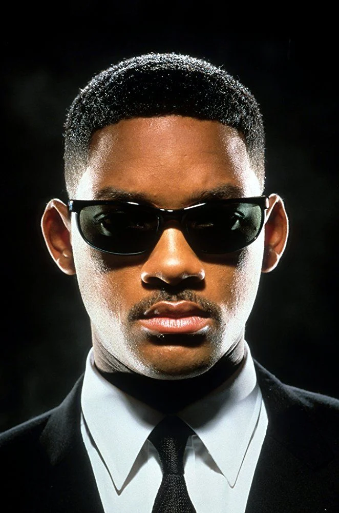
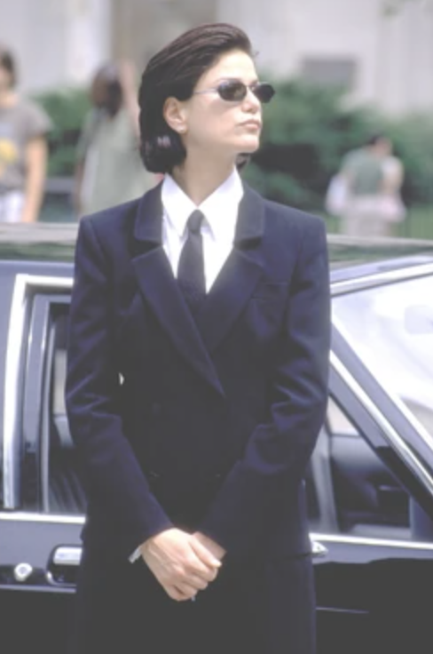

Will Smith
Personaje: Agente J
Actuación: Joven y audaz expolicía de Nueva York que es reclutado por una agencia secreta que vigila la vida extraterrestre en la Tierra
Willard Carroll Smith (Filadelfia, 25 de septiembre de 1968), más conocido como Will Smith, es un actor, rapero y productor de cine estadounidense.

Tommy Lee Jones
Personaje: Agente K
Actuación: Kay es un agente de élite con décadas de experiencia en los MIB.
Tommy Lee Jones (15 de septiembre de 1946) es un actor y cineasta estadounidense. Ha recibido cuatro nominaciones al Premio de la Academia,
ganando el premio en la categoría de mejor actor de reparto por su actuación como el alguacil Samuel Gerard en la película de suspense de 1993 El fugitivo.

Linda Fiorentino
Personaje: Agente L
Linda Fiorentino nació en Pennsylvania (EE.UU.), tiene 68 años y lleva en activo 14 años.. En lo que respecta a su carrera en el mundo del cine, Linda Fiorentino ha formado parte de: 'Dogma', 'Men in Black (Hombres de negro)' y 'La última seducción'.